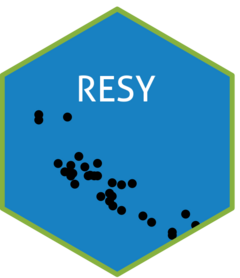
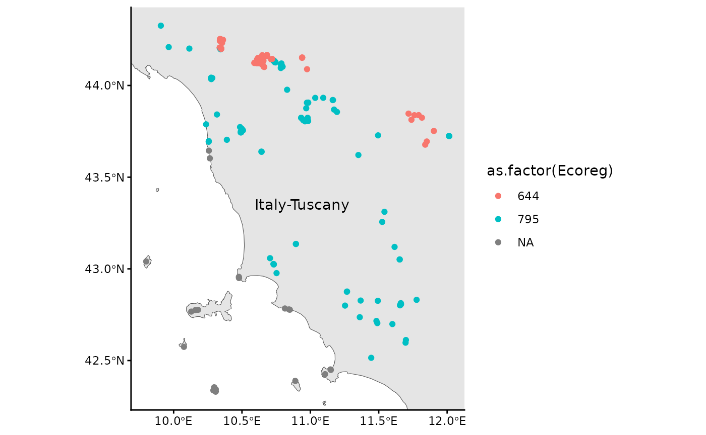

Get EUNIS habitat types
Markus Bauer, Mariasole Calbi & Gilles Colling
Source:vignettes/EUNIS.Rmd
EUNIS.RmdThis vignette shows how to classify European vegetation relevés into EUNIS habitat types using the expert system of Chytrý et al. (2020). Habitat descriptions are available on FloraVeg.EU (Chytrý et al. 2024) and the EEA EUNIS website.
First, resy_harmonize_eunis() prepares the plot data. It
adds geographic information such as country, ecoregion and coastal
position, and checks and adjusts the coordinate format and species names
to meet the expert system’s requirements. Then,
resy_classify() assigns the relevés to habitat types using
their species composition and site data.
Example
The following R packages are required to run the example of this vignette:
Load the example data
The example data include the species table with the vegetation relevés and the header table with the location of each relevé.
First, load the vegetation relevés:
data_species <- read_csv(
system.file("extdata", "data_example_species.csv", package = "RESY")
)
data_species
#> # A tibble: 3,580 × 3
#> PlotObservationID Cover_Perc scientificName
#> <chr> <dbl> <chr>
#> 1 HU32 0.1 Dryopteris filix-mas (L.) Schott
#> 2 HU32 0.1 Cephalanthera longifolia (L.) Fritsch
#> 3 HU32 0.5 Prenanthes purpurea L.
#> 4 HU32 0.5 Anemone nemorosa L.
#> 5 HU32 0.5 Epipactis helleborine (L.) Crantz subsp. helleb…
#> 6 HU32 0.5 Sorbus aucuparia L. subsp. aucuparia
#> 7 HU32 87.5 Fagus sylvatica L.
#> 8 HU32 3 Rubus hirtus Waldst. & Kit.
#> 9 HU32 3 Abies alba Mill.
#> 10 HU32 3 Oxalis acetosella L.
#> # ℹ 3,570 more rowsresy_clean_names() removes the author names from the
species names and keeps rank markers such as subsp. and
var.:
data_species$scientificName <- resy_clean_names(
data_species$scientificName
)Second, load the header table:
data_sites <- read_csv(
system.file("extdata", "data_example_sites.csv", package = "RESY")
) |>
st_as_sf(coords = c("Longitude", "Latitude"), crs = 4326)
data_sites
#> Simple feature collection with 200 features and 1 field
#> Geometry type: POINT
#> Dimension: XY
#> Bounding box: xmin: 9.809499 ymin: 42.32483 xmax: 12.08963 ymax: 44.32464
#> Geodetic CRS: WGS 84
#> # A tibble: 200 × 2
#> PlotObservationID geometry
#> * <chr> <POINT [°]>
#> 1 JZ37 (9.93798 44.32464)
#> 2 FR49 (11.09287 43.91546)
#> 3 PT45 (11.65339 43.09104)
#> 4 ZH63 (10.53301 43.73897)
#> 5 TF93 (10.40239 44.23978)
#> 6 KG68 (10.40203 44.24087)
#> 7 QJ27 (10.40635 44.2413)
#> 8 JN90 (10.40602 44.24296)
#> 9 ZM18 (10.66071 44.12734)
#> 10 BQ20 (10.6589 44.12456)
#> # ℹ 190 more rowsGet additional data
Load the expert system
resy_load_expert() reads the EUNIS expert system.
resy_harmonize_eunis() uses it to check the species
names.
parsed_expert_file <- resy_load_expert(scheme = "EUNIS")Apply resy_harmonize_eunis()
resy_harmonize_eunis() prepares the header table and the
species table:
outcome <- resy_harmonize_eunis(
data = data_sites,
run_taxonomy = TRUE,
species_data = data_species,
parsed = parsed_expert_file,
run_coast_dunes = TRUE,
coast_buffer = 5000
)
#> Warning: "Altitude (m)" is missing. See the "Get altitude data" vignette;
#> altitude rasters are available from mapsforeurope.org.
#> Warning: "Ecoreg" is missing for some plots because they fall outside the
#> ecoregion map.resy_harmonize_eunis() gives two warnings. The first
says that the column Altitude (m) is missing:
resy_harmonize_eunis() cannot add it, but
vignette("altitude-vignette") shows how to get it. The
second says that the ecoregion column (Ecoreg) contains
NA values for sites outside the ecoregion base map.
Inspect additional data
Here is the header table with the ecoregions and countries that
resy_harmonize_eunis() added:
outcome$sites
#> # A tibble: 200 × 11
#> PlotObservationID Coast_EEA Dunes_Bohn Ecoreg Ecoreg_name Country Country_ID
#> <chr> <chr> <chr> <dbl> <chr> <chr> <chr>
#> 1 JZ37 N_COAST N_DUNES 795 Italian scl… Italy IT
#> 2 FR49 N_COAST N_DUNES 795 Italian scl… Italy IT
#> 3 PT45 N_COAST N_DUNES 795 Italian scl… Italy IT
#> 4 ZH63 N_COAST N_DUNES 795 Italian scl… Italy IT
#> 5 TF93 N_COAST N_DUNES 644 Appenine de… Italy IT
#> 6 KG68 N_COAST N_DUNES 644 Appenine de… Italy IT
#> 7 QJ27 N_COAST N_DUNES 644 Appenine de… Italy IT
#> 8 JN90 N_COAST N_DUNES 644 Appenine de… Italy IT
#> 9 ZM18 N_COAST N_DUNES 644 Appenine de… Italy IT
#> 10 BQ20 N_COAST N_DUNES 644 Appenine de… Italy IT
#> # ℹ 190 more rows
#> # ℹ 4 more variables: Longitude <dbl>, Latitude <dbl>, DEG_LON <dbl>,
#> # DEG_LAT <dbl>Missing info
These vegetation relevés did not get an ecoregion:
outcome$sites |>
filter(is.na(Ecoreg))
#> # A tibble: 23 × 11
#> PlotObservationID Coast_EEA Dunes_Bohn Ecoreg Ecoreg_name Country Country_ID
#> <chr> <chr> <chr> <dbl> <chr> <chr> <chr>
#> 1 OR48 MED_COAST N_DUNES NA NA Italy IT
#> 2 EQ56 MED_COAST N_DUNES NA NA Italy IT
#> 3 IS69 MED_COAST N_DUNES NA NA Italy IT
#> 4 JP48 MED_COAST N_DUNES NA NA Italy IT
#> 5 MF17 MED_COAST N_DUNES NA NA Italy IT
#> 6 SA50 MED_COAST N_DUNES NA NA Italy IT
#> 7 DR59 MED_COAST N_DUNES NA NA Italy IT
#> 8 QI21 MED_COAST N_DUNES NA NA Italy IT
#> 9 PK58 MED_COAST N_DUNES NA NA Italy IT
#> 10 OY37 MED_COAST N_DUNES NA NA Italy IT
#> # ℹ 13 more rows
#> # ℹ 4 more variables: Longitude <dbl>, Latitude <dbl>, DEG_LON <dbl>,
#> # DEG_LAT <dbl>All 23 of these plots are on the Mediterranean coast
(Coast_EEA is MED_COAST), where the ecoregion
base map does not reach. Their country was found. In your own data, set
their ecoregion before classifying. This example leaves them unset, so
resy_classify() evaluates their ecoregion as 0 and
warns.
Here is the updated map with the ecoregions in different colors:

Checked species names
outcome$species_checked has one row per species name:
the name in the data (scientificName), the name the expert
system uses (TaxonName) and whether it matched
(matched):
outcome$species_checked
#> <resy_taxa> 1006 name(s) from column `scientificName` checked against 20159 Section 1 species
#> scientificName Name as submitted
#> TaxonName Canonical name used by resy_classify(); NA when unmatched
#> matched TRUE if found as a canonical name or Section 1 synonym
#> 935 matched (92.9%), 71 unmatched; summary() lists them
#>
#> scientificName TaxonName matched
#> 1 Dryopteris filix-mas Dryopteris filix-mas aggr. TRUE
#> 2 Cephalanthera longifolia Cephalanthera longifolia TRUE
#> 3 Prenanthes purpurea Prenanthes purpurea TRUE
#> 4 Anemone nemorosa Anemone nemorosa TRUE
#> 5 Epipactis helleborine subsp. helleborine Epipactis helleborine aggr. TRUE
#> 6 Sorbus aucuparia subsp. aucuparia Sorbus aucuparia TRUE
#> 7 Fagus sylvatica Fagus sylvatica TRUE
#> 8 Rubus hirtus Rubus fruticosus aggr. TRUE
#> 9 Abies alba Abies alba TRUE
#> 10 Oxalis acetosella Oxalis acetosella TRUE
#> # ... 996 more row(s)
summary(outcome$species_checked)
#> 1006 names checked: 935 matched (92.9%), 71 not matched (7.1%).
#>
#> Not matched:
#> genus only (25): Allium, Anthoxanthum, Asparagus, Carex, Cirsium, Crocus,
#> Cuscuta, Dianthus, Festuca, Galium, Hieracium, Linaria, Medicago, Odontites,
#> Orchis, Potentilla, Ranunculus, Rosa, Rubus, Taraxacum, Tragopogon,
#> Trifolium, Usnea, Vicia, Viola
#> below species level (7): Artemisia caerulescens var. palmata,
#> Cerastium arvense var. etruscum, Festuca arundinacea subsp. arundinacea,
#> Juniperus communis subsp. saxatilis, Melica minuta var. arrecta,
#> Plantago maritima subsp. serpentina, Tanacetum corymbosum var. tenuifolium
#> species (39): Aegopodium podagraria, Anthyllis barba-jovis,
#> Borago officinalis, Cardamine chelidonia, Cardamine monteluccii,
#> Carex macrolepis, Carex mucronata, Centaurea triumfetti, Crithmum maritimum,
#> Crocus neglectus, Echinophora spinosa, Eryngium maritimum,
#> Erysimum pseudorhaeticum, Festuca riccerii, Flavoparmelia caperata,
#> Humulus lupulus, Juglans regia, Laurus nobilis, Leopoldia comosa,
#> Marrubium incanum, Melica uniflora, Narcissus poëticus, Odontites rubra,
#> Ononis variegata, Oreojuncus trifidus, Paris quadrifolia, Phyteuma italicum,
#> Ranunculus velutinus, Scleropodium tourretti, Sherardia arvensis,
#> Silene paradoxa, Silene pichiana, Spartium junceum, Staphylea pinnata,
#> Stipellula capensis, Taraxacum erythrosperma, Thesium sommieri,
#> Tordylium apulum, Viola ferrariniiFinalize species data
resy_classify() needs the checked names together with
the cover of each species, so the species table is joined to the checked
names:
outcome_species <- data_species |>
left_join(outcome$species_checked, by = "scientificName") |>
select(PlotObservationID, TaxonName, Cover_Perc)
outcome_species |>
filter(PlotObservationID == "AE28") |>
arrange(desc(Cover_Perc), TaxonName)
#> # A tibble: 14 × 3
#> PlotObservationID TaxonName Cover_Perc
#> <chr> <chr> <dbl>
#> 1 AE28 Mentha requienii 87.5
#> 2 AE28 Vulpia myuros 15
#> 3 AE28 Cicendia filiformis 3
#> 4 AE28 Polypogon maritimus 3
#> 5 AE28 Radiola linoides 3
#> 6 AE28 Vincetoxicum hirundinaria 3
#> 7 AE28 Vulpia ciliata 3
#> 8 AE28 Anisantha madritensis 0.5
#> 9 AE28 Lotus subbiflorus 0.5
#> 10 AE28 Plantago coronopus aggr. 0.5
#> 11 AE28 Pohlia elongata 0.5
#> 12 AE28 Sagina apetala 0.5
#> 13 AE28 Sagina subulata 0.5
#> 14 AE28 Trifolium micranthum 0.5Classify relevés
resy_classify() classifies the vegetation relevés
(obs) using the site data in the header table
(header):
res <- resy_classify(
obs = outcome_species,
header = outcome$sites,
scheme = "EUNIS"
)
#> Warning: `header` is missing columns used by the expert system: Dataset,
#> Altitude (m). Rules using these columns are evaluated with a value of 0.
#> Warning: Header columns used by the expert system have missing values: Ecoreg
#> (23 plots). Conditions on them are evaluated as if the value were 0.
#> Step 5.1 Number of conditions with number of species of a group: 15
#> Step 5.2 Number of conditions with minimum number of species: 127
#> Step 5.3 Number of conditions with sum of square rooted Cover_Perc of species: 140
#> Step 5.4 Number of conditions with total Cover_Perc of the group: 0
#> Step 5.5 Number of conditions with total Cover_Perc of all other species: 1
#> Number of conditions with total Cover_Perc of all other species except those on the left-hand side: 31
#> Number of conditions with $05, $25 etc.: 4
#> Step 5.6 Number of conditions with maximum cover of the group: 81
#> Step 5.7 Number of conditions with single species, header levels (e.g. country names): 94
#> Step 5.8 Number of conditions with maximum Cover_Perc in plot: 1
#> Number of conditions with maximum Cover_Perc in plot EXCEPT species of target group: 0
#> Step 5.9 Number of T$ NON conditions: 140
#> Step 5.10 Header conditions with numeric values: 4
#> Header conditions with character values: 4
#> adapt conditions 2026-10-29 12:12:41.177606
#> classification from here on 2026-10-29 12:12:41.278297resy_classify() warns about the site data that is
missing: the header has no Altitude (m) and no
Dataset column (one EUNIS rule excludes the Swedish
National Forest Inventory), and 23 plots have no ecoregion.
Inspect results
Long table of candidates for all plots
Plot AM30 meets the rules of two EUNIS habitat types, T17 and its parent T. It is assigned to T17, which has the higher priority.
cand <- resy_candidates(res, top_n = 3)
cand
#> plot_id type priority priority_rank
#> <char> <char> <ord> <int>
#> 1: AE28 R 1 1
#> 2: AM30 T17 4 4
#> 3: AM30 T 3 3
#> 4: AN57 T 3 3
#> 5: BE71 T 3 3
#> ---
#> 301: ZS46 R 1 1
#> 302: ZX20 T32 4 4
#> 303: ZX20 T 3 3
#> 304: ZX92 T17 4 4
#> 305: ZX92 T 3 3wide = TRUE gives one row per plot: the type it is
classified as, then its candidate types with their priorities, highest
priority first:
resy_candidates(res, top_n = 3, wide = TRUE)
#> plot_id classification type_1 priority_1 type_2 priority_2 type_3
#> <char> <char> <char> <ord> <char> <ord> <char>
#> 1: HU32 T17 T17 4 T 3 <NA>
#> 2: KW76 T17 T17 4 T 3 <NA>
#> 3: YB18 T T 3 <NA> <NA> <NA>
#> 4: NX70 T T 3 <NA> <NA> <NA>
#> 5: OL48 T T 3 <NA> <NA> <NA>
#> ---
#> 196: ZH63 Sa Sa 3 <NA> <NA> <NA>
#> 197: SU38 T T 3 <NA> <NA> <NA>
#> 198: CG67 S51 S51 4 Sa 3 <NA>
#> 199: HC96 Sa Sa 3 <NA> <NA> <NA>
#> 200: DZ84 Sa Sa 3 <NA> <NA> <NA>
#> priority_3
#> <ord>
#> 1: <NA>
#> 2: <NA>
#> 3: <NA>
#> 4: <NA>
#> 5: <NA>
#> ---
#> 196: <NA>
#> 197: <NA>
#> 198: <NA>
#> 199: <NA>
#> 200: <NA>Plot-level details
resy_eval_plot() prints the full evidence for one plot:
its species, which vegetation-type formulas evaluated to
TRUE, and the type it is classified as. It then lists the
lower-level types the plot did not reach, with the result of each of
their conditions, which shows why the classification stopped at this
level.
resy_eval_plot(res, p = "AM30") # p = PlotObservationID
#> Types whose rule holds: T17 (priority 4), T (priority 3)
#> Classified as T17 (Fagus forest on non-acid soils), the type with the highest priority.
#>
#> Plot AM30: 12 species
#> species cover
#> Fagus sylvatica 87.5
#> Prenanthes purpurea 3.0
#> Abies alba 0.5
#> Acer pseudoplatanus 0.5
#> Athyrium filix-femina 0.5
#> Dryopteris filix-mas aggr. 0.5
#> Hieracium murorum 0.5
#> Solidago virgaurea 0.5
#> Sorbus aucuparia 0.5
#> Veronica urticifolia 0.5
#> Cicerbita muralis 0.1
#> Luzula nivea 0.1
#>
#> T17 has no lower levels.Passing type explains any other type in the same way,
whether or not its rule holds for the plot:
resy_eval_plot(res, p = "AM30", type = "T17")
#> Types whose rule holds: T17 (priority 4), T (priority 3)
#> Classified as T17 (Fagus forest on non-acid soils), the type with the highest priority.
#>
#> Plot AM30: 12 species
#> species cover
#> Fagus sylvatica 87.5
#> Prenanthes purpurea 3.0
#> Abies alba 0.5
#> Acer pseudoplatanus 0.5
#> Athyrium filix-femina 0.5
#> Dryopteris filix-mas aggr. 0.5
#> Hieracium murorum 0.5
#> Solidago virgaurea 0.5
#> Sorbus aucuparia 0.5
#> Veronica urticifolia 0.5
#> Cicerbita muralis 0.1
#> Luzula nivea 0.1
#>
#> T17 has no lower levels.
#>
#> T17 Fagus forest on non-acid soils: rule holds
#> Rule: ((([1] and ([2] or [3])) and [4]) and not [5]) and not (([6] or ([7] and [8])) or (([9] and [10]) or ([11] and [12])))
#> [1] met total cover of Fagus-sylvatica-orientalis is 87.5%, needs more than 30%
#> Fagus sylvatica 87.5
#> [2] met cover of Fagus sylvatica is 87.5%, needs more than the highest cover of a single species of Trees not counting Fagus sylvatica (0.5%)
#> Fagus sylvatica 87.5, Abies alba 0.5, Acer pseudoplatanus 0.5, Sorbus aucuparia 0.5
#> [3] not met cover of Fagus orientalis is 0%, needs more than the highest cover of a single species of Trees not counting Fagus orientalis (87.5%)
#> Fagus sylvatica 87.5, Abies alba 0.5, Acer pseudoplatanus 0.5, Sorbus aucuparia 0.5
#> [4] met number of species of Eutrophic-deciduous-forest-species is 3, needs more than the number of species of Acidophilous-forest-species (2)
#> Prenanthes purpurea 3, Dryopteris filix-mas aggr. 0.5, Hieracium murorum 0.5, Veronica urticifolia 0.5, Luzula nivea 0.1
#> [5] not met total cover of Acidophilous-forest-species is 0.6%, needs more than 25%
#> Hieracium murorum 0.5, Luzula nivea 0.1
#> [6] not met Country is Italy, needs Ireland
#> [7] not met Country is Italy, needs United Kingdom
#> [8] not met DEG_LAT is 44.1, needs more than 53
#> [9] not met DEG_LAT is 44.1, needs more than 48
#> [10] not met DEG_LON is 10.7, needs more than 26.5
#> [11] not met DEG_LAT is 44.1, needs more than 55
#> [12] not met DEG_LON is 10.7, needs more than 19Print classification hierarchy
resy_expert_tree() prints the type hierarchy of an
expert system. In this example, it is the EUNIS
expert system, and the tree lists all its types, whether or not they
occur in your data. fill = TRUE adds the group levels that
the type codes imply but the expert system does not list, here
MA2 and MA22. The output is cut to the first
10 types. Descriptions of all EUNIS habitat types are on FloraVeg.EU.
resy_expert_tree(parsed_expert_file, fill = TRUE) |>
head(10)
#> <resy_expert_tree> 10 node(s), 1 top-level, 2 synthesised group(s)
#> MA Coastal saltmarshes
#> MA2
#> MA211 Arctic coastal saltmarsh
#> MA22
#> MA221 Atlantic saltmarsh driftline
#> MA222 Atlantic upper saltmarsh
#> MA223 Atlantic upper-mid saltmarsh and saline and brackish reed, rush and sedge bed
#> MA224 Atlantic mid-low saltmarsh
#> MA225 Atlantic pioneer saltmarsh
#> MA232 Baltic coastal meadowReferences
Chytrý M, Řezníčková M, Novotný P, Holubová D et al. (2024) FloraVeg.EU – an online database of European vegetation, habitats and flora. – Applied Vegetation Science 27, e12798. https://doi.org/10.1111/avsc.12798
Chytrý M, Tichý L, Hennekens SM, Knollová I et al. (2020) EUNIS Habitat Classification: expert system, characteristic species combinations and distribution maps of European habitats. – Applied Vegetation Science 23, 648–675. https://doi.org/10.1111/avsc.12519